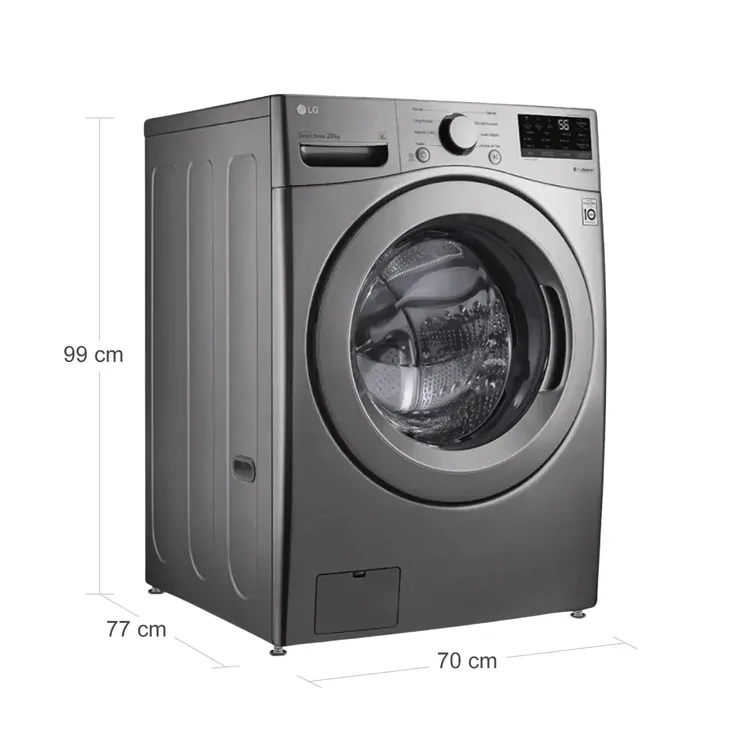
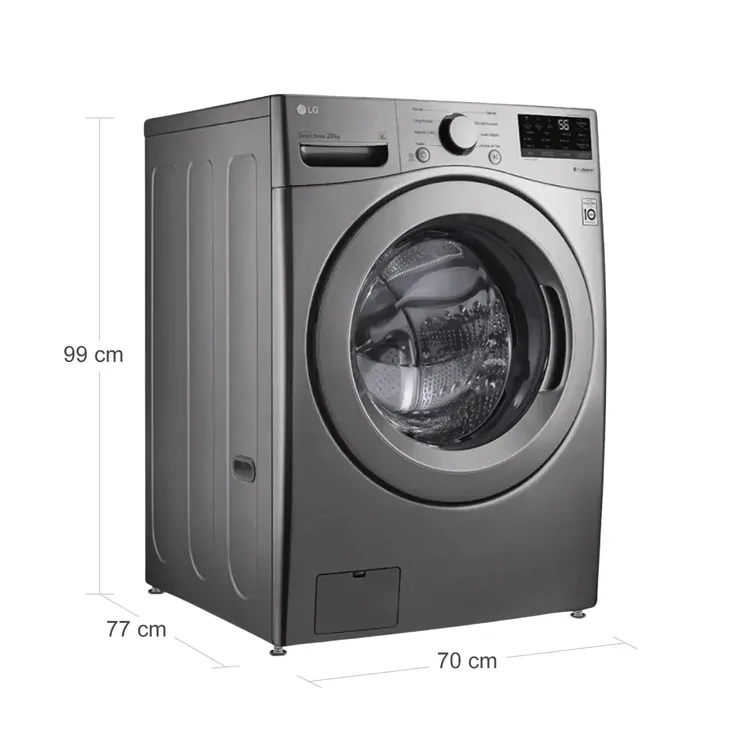

Lavadoras en Venta
Lavadora WHIRLPOOL
Carga Superior 17 Kilos WW17KTAHLA Negro
Smart Action: Combina 3 tecnologías inteligentes Xpert Eco: Ciclo que ahorra hasta 45% de agua. Consola frontal de botones sobre tapa. 10 años garantia en motor 5 años garantia en consola
$ 1.859.900
 

Lavadora LG
Carga Frontal 20 Kilos WM20VV26W Gris
Sistema de lavado 6MotionDD™ Opcion Añadir prendas True Balance™ minimiza ruido y vibración Motor Inverter Direct Drive 10 Años de Garantia Ciclo Pre-Lavado + Normal, la lavadora se encarga del lavado completo
$ 3.354.900
Torre de Lavado y Secado SAMSUNG
Laundry Hub Bespoke 22 Kilos WH22DBH570GVCO Negro con Inteligencia Artificial
AI Optiwash/Dry: 7 sensores para una lavado y secado óptimo. Flex-AutoDispenser: Dispensa automática de jabón/suavizante. Bespoke Design: Un solo cuerpo, ahorra espacio. Super Speed (Wash/Dry): Lava y seca en menos de una hora. SmartThings: Controla y optimiza el uso desde tu celular.
$ 7.299.900
Torre de Lavado y Secado LG
Wash Tower en un solo cuerpo Lavadora 25 Kilos/Secadora 22 Kilos WK25BS6 Gris con Inteligencia Artificial
Inteligencia Artificial con AI DD™ AI Sensor Dry™ ajuste automático temperatura del secado Panel Central alcance ideal e intuitivo TurboWash 360° Finaliza el ciclo en 29 minutos ThinQ™ App Control Opera o monitorea desde cualquier lugar en cualquier momento
$ 7.479.900

Lavadora/Secadora LG
Carga Frontal 22 Kilos WD22VV2S6BR PlateadoLavadora/Secadora LG Carga Frontal 22 Kilos WD22VV2S6BR Plateado
AIDD (Inteligencia Artificial) Opción TurboWash ™ (Acorta el tiempo de lavado) Sistema de Lavado 6MotionDD ™ (6 Movimientos en tina) Opción Vapor Tecnología SPA Steam™ Tecnología SmartThinQ
$ 4.344.900
Lavadora CHALLENGER
Carga Superior 15 Kilos CW5715 Gris
Limpieza 360° - Bajo desgaste y mejor cuidado para la ropa Guarda en memoria el último estado al corte de energía Filtro que evita el retorno de fibras y mantiene limpio el lavado Programación de tiempo de inicio de lavado Función limpieza de tina: Mayor higiene
$ 1.499.900

Lavadora ACROSS
Semi Automática Carga Superior 8 Kilos ALD0835PE Blanca
Prendas 50% más secas con MaxSpin Dry Ciclos y funciones muy fáciles de usar Sistema de perilla fácil de usar
$ 689.900
Lavadora HACEB
Carga superior 13 Kilos AWÜA Digital Negro
Tecnología de lavado profundo, que lava muy bien la ropa Sistema de aerocentrifugado, las prendas salen más secas Personaliza tu lavado: 15 configuraciones de lavado Filtro atrapa motas: disminuye las pelusas de tu ropa Tapa de caída suave: protege tu lavadora y evita accidentes
$ 1.564.900
Lavadora/Secadora WHIRLPOOL
Carga Frontal 10.1Kg 7MWFC5090 Gris
Sistema de lavado de Alta Eficiencia HE Controles Touch Ciclo de 1HR Pantalla LCD Ciclo gentle care
$ 2.649.900

Lavadora/Secadora SAMSUNG
Carga Frontal 18 Kilos WD18T6000GP/CO Inox
20 años de garantía en el motor Digital Inverter VRT Plus, innovadora tecnología reduce ruido y la vibración Drum Clean elimina el 99,9% de bacterias del tambor Air Wash desodoriza y desinfecta tus prendas Bubble Soak, ayuda a eliminar manchas dificiles
$ 3.899.900
Lavadora HACEB
Carga Superior 14 Kilos IVY Digital Negro
Lavado Inteligente, censado del agua para máximo ahorro Ciclo para cada tipo de prenda Limpieza de tanque Función ECO (reutilizar agua) Función menos arrugas y manchas fuertes
$ 1.599.900
Lavadora HACEB
Semi Automática Carga Superior 13 Kilos Blanca
Su tecnología de lavado mejora la limpieza de la ropa. Capacidad de lavar y centrifugar al mismo tiempo. Flexibilidad de elegir entre el ciclo normal y delicado. Resiste los climas más extremos. Tú decides el nivel de agua que necesitas.
$ 1.069.100